Side projects · 2026
AI experiments
A route-planning runner’s map, a space game for the browser, a seasonal produce calendar and an iPhone app for fuel prices. Four things I made with AI tools, outside client work.
- 01 · Roam ↓
- Running routes past sights you’d miss, without accounts or GPS bloat.
- 02 · Wayward ↓
- A 3D space-survival game for desktop and phone browsers. Still being built.
- 03 · Erntereif ↓
- A seasonal calendar of what’s being harvested near you, month by month.
- 04 · Tanken ↓
- An iPhone app for German fuel prices, and whether to fill up now or wait.
01Roam
Discover a city, one run at a time.
Choose how far you want to run and what you’d like to see. Roam builds a runnable loop past the sights.
No account. No GPS tracking. No social feed. Just a different way to explore.
Open Roam ↗︎- The brief
- When I’m somewhere new, often I want to head out for a run and explore the local area, not spend twenty minutes planning a route.
- The challenge
- Route generation without the bloat. Major running apps are cluttered with GPS telemetry, logins, and social feeds; the goal was delivering instant, runnable routes with zero tracking and lightweight SVG rendering that opens in seconds.
- Built with
- Expo Web · TypeScript · SVG map rendering
Three questions, then a run.
Roam opens on a map of Berlin, with no account and no location prompt. It asks where you start, how far you want to go, and what would make the run great.

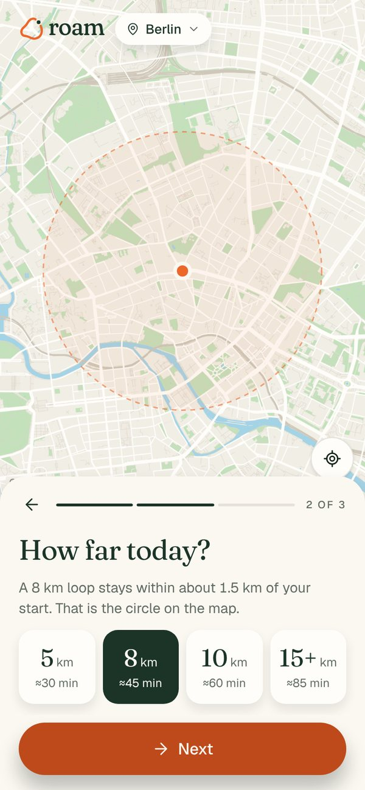
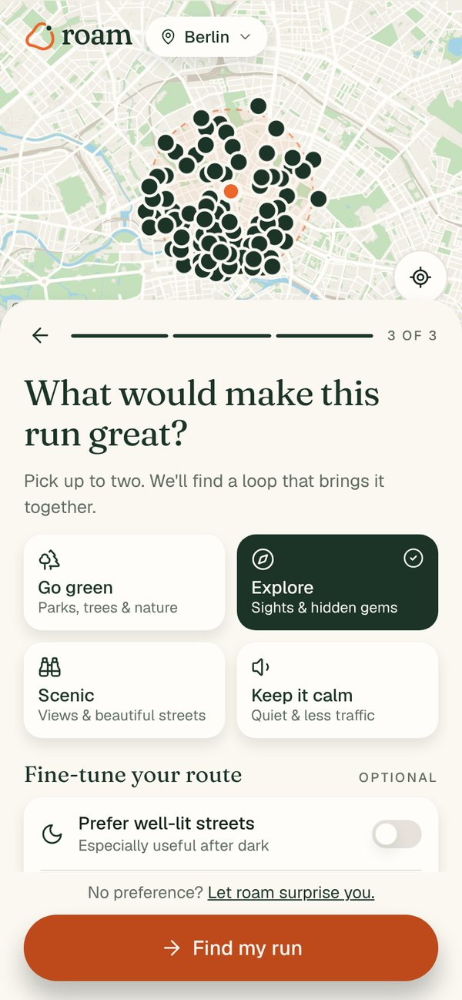
Three loops, planned on the phone.
Roam plans routes on the device, from OpenStreetMap and Wikidata for Berlin. For this run it offered three loops of 7.7 to 8.1 km. The best match passes 10 sights, from the Fernsehturm to the New Synagogue.

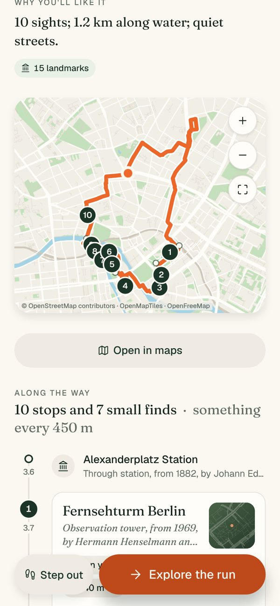
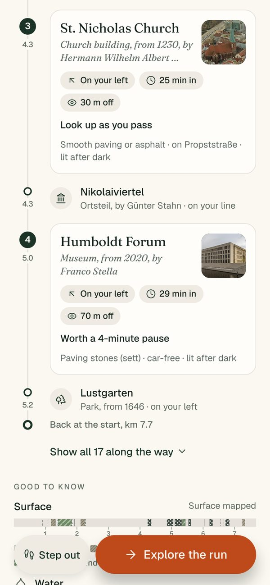
Stop by stop, before you go.
“Explore the run” turns the route into its 10 stops. Each one says which side it’s on, how far off the path, how many minutes in, and what’s underfoot.
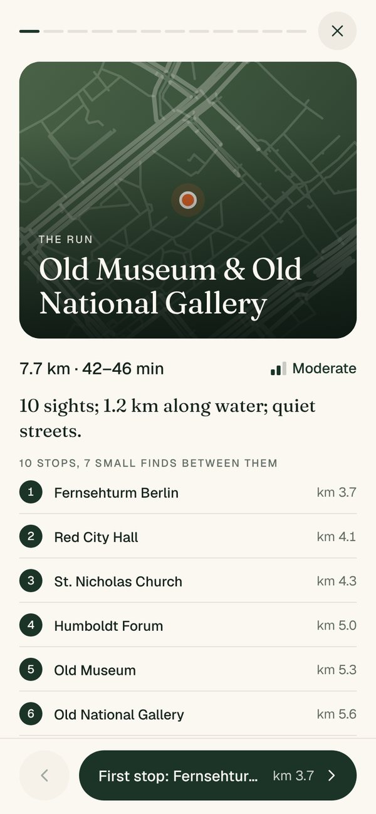
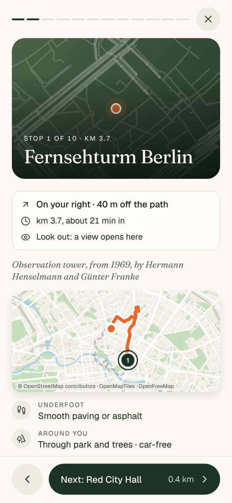
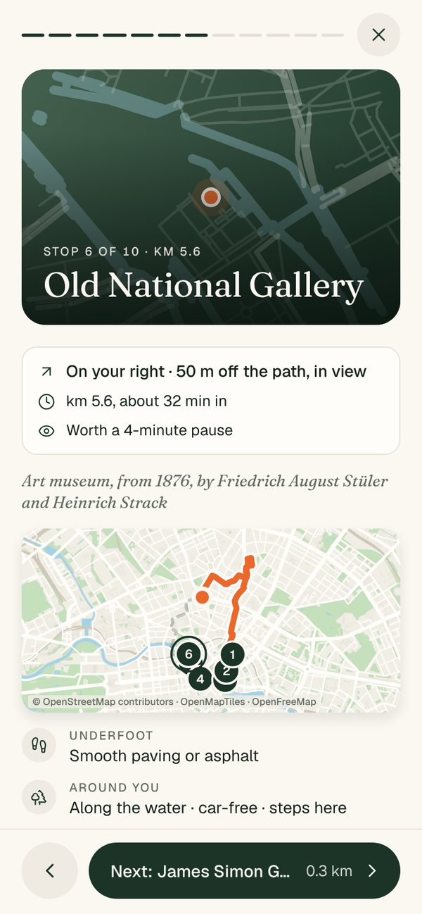
One run in Roam: 8 km from Rosenthaler Platz, sights first. Real screens; sight photos show the app’s map placeholder
02Wayward
An ore hauler, a buried secret, a long way to go.
A 3D space-survival space opera built for mobile and desktop browsers. You pilot an aging ore hauler on the run from the authorities: mine asteroids for fuel, refit your ship, and try to stay one jump ahead.
Play Wayward ↗︎- The brief
- A 3D space game with a story behind it, that runs in a phone browser as well as on a desktop.
- The hard part
- Getting the story right. Testing each draft by playing it, and pushing the AI until the plot and the game work.
- Built with
- TypeScript and Three.js. Its own repo, deployed on its own.

Mine. Survive. Stay off the grid.

Arriving at Hollis, a mining stop

Cerro, under Custody control. Laser the Cyrite rock, then head for the jump gate

Docked. Cyrite buys jump fluid, supplies and hull plates, and the dock says what the next jump needs

The refit bay suggests three upgrades for the ship you have
03Erntereif
A seasonal calendar for what’s growing near you.
Pick a month and it shows what’s being harvested, what’s out of cold store, and what the imported version costs in carbon. 87 crops, five countries, German interface.
Open Erntereif ↗︎- The brief
- When I’m food shopping, I want to know what’s in season here right now, so I can buy that instead of something flown in.
- The hard part
- Data integrity and QA. Generative tools draft data in seconds, but reviewing 87 crops meant wrestling with the real question: fact-checking every item by hand versus learning where to trust AI-generated content.
- Built with
- React and TypeScript.

September in Germany. 65 varieties harvested, 66 available once cold store counts
Hochsaison
Was der September bringt
- Being harvested
- 65
- Available, with cold store
- 66
New this month: quinces, table grapes, parsnips

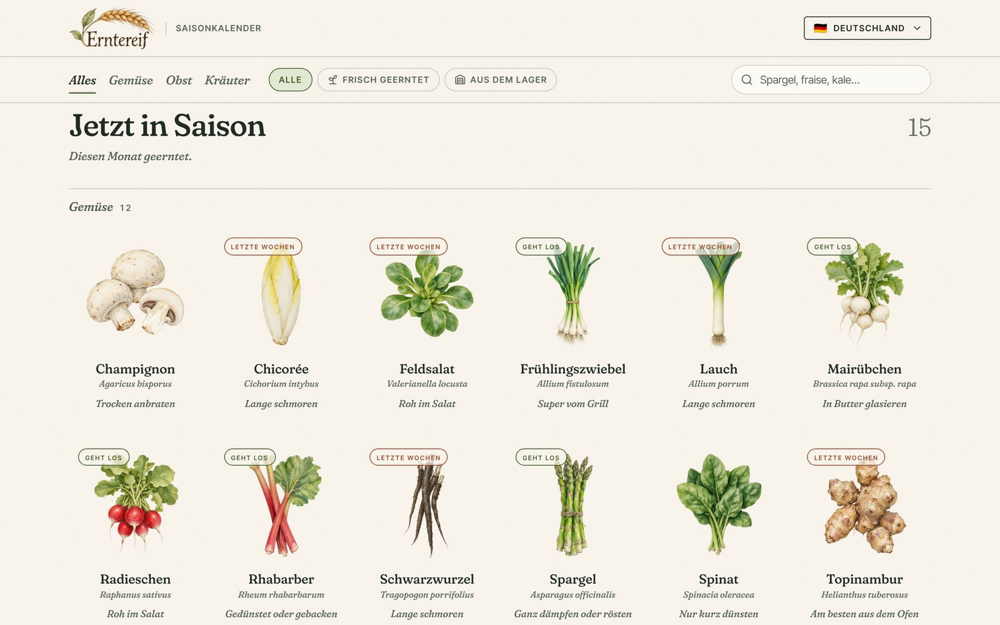
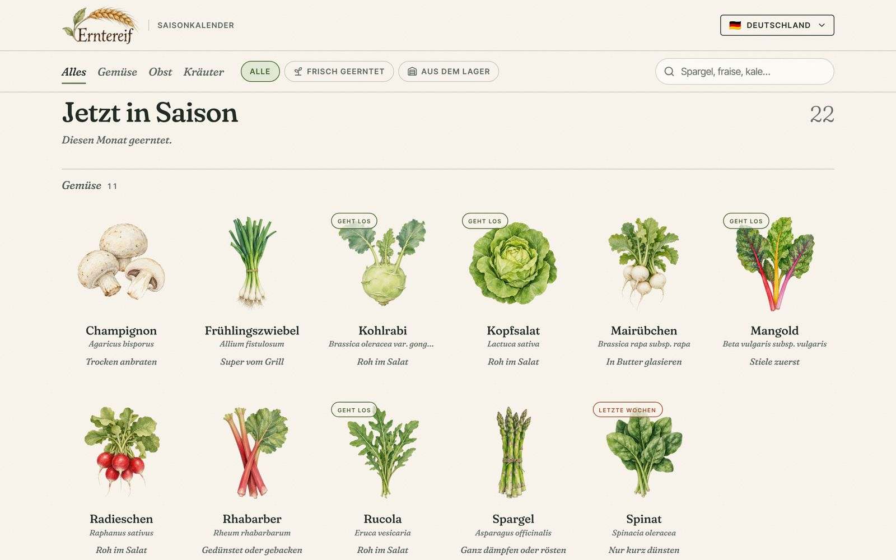
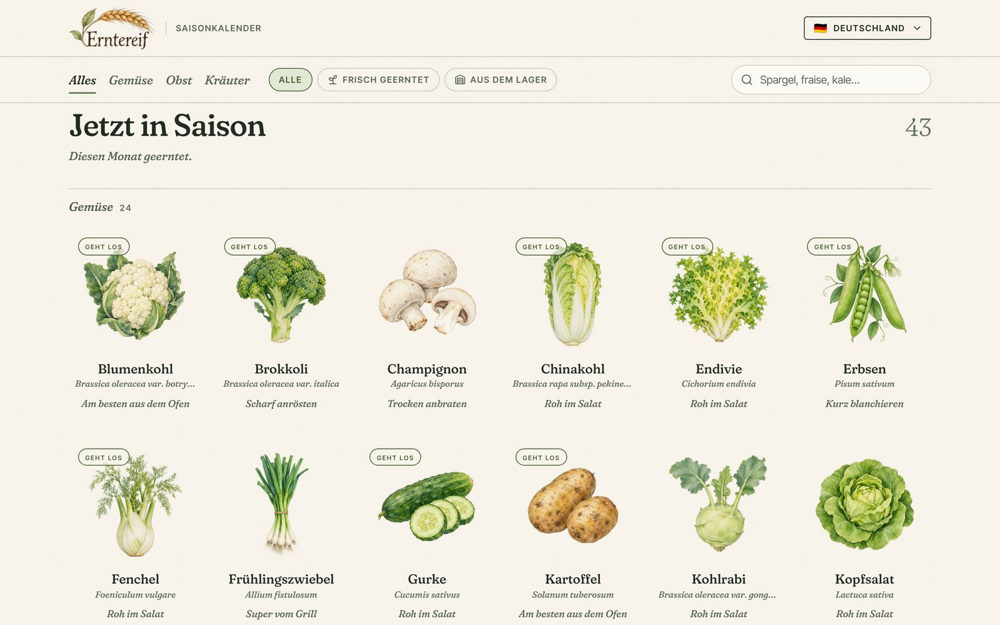
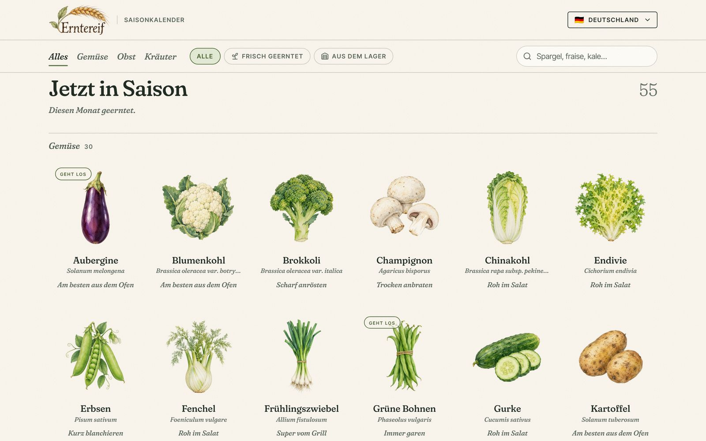
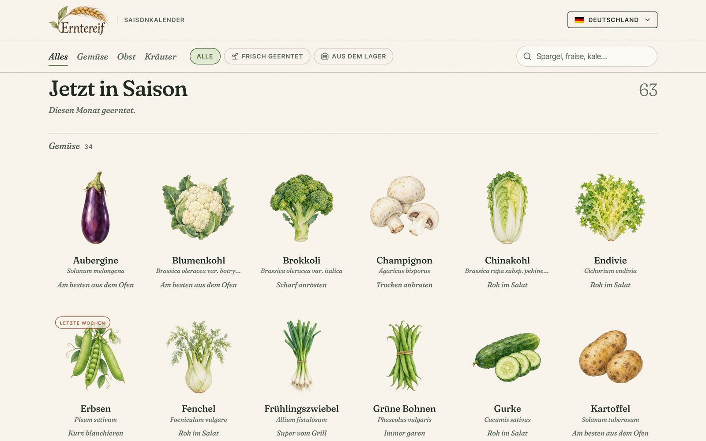
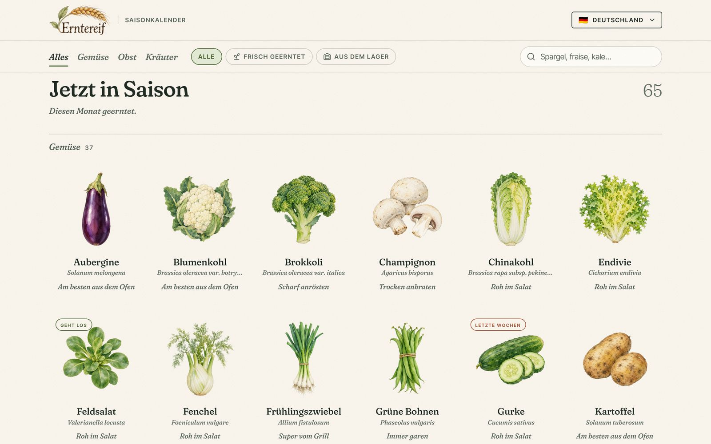
Germany, March to September. The figures and the grid below them are the app’s own for each month. Drag across the months or use the arrow keys
04Tanken
Fuel prices, and whether to fill up now or wait.
German stations have had to report their prices publicly since 2013. Tanken reads that feed and shows today’s average, how it got there, the five biggest chains ranked cheapest first, and a guarded outlook for tomorrow.
- The brief
- When I drive past a petrol station, I want to know whether today’s price is a good one, so I don’t fill up the day before it drops.
- The hard part
- The API hunt. Finding, connecting, and wrangling Germany’s public fuel feeds to pull the raw numbers needed for clean historical trends and a reliable forecast.
- Built with
- SwiftUI. One screen, no tab bar.


05How they were made
Made with a mix of AI tools.
ChatGPT, Lovable and Claude each got things running fast, but code generation is only the starting line. Getting to a product worth using took what software always takes: taste, constraints, and sweating the details.
Client work →
Back to selected work